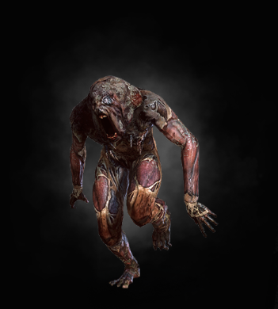

|  |
Bestiary Description:What rotfiends are, everyone can see. Even seeing them is not necessary, as hearing their name should be enough to tell anyone what creatures might bear this unpleasant title. The creatures multiplied after the last Northern War and today plague wilderness villages and forest settlements.
Given that they are necrophages, rotfiends feed on carrion and human corpses, though this does not mean they do not attack the living. They appear on battlefields, near cities afflicted by plague, or around villages touched by famine. See a rotfiend and you can be sure there are many more in the area. They appear of a sudden, and disappear even more quickly if threatened, so exterminating them is difficult. Trapping rotfiends makes little or no sense. Instead, they are best dealt with by cutting off their food supply, that is, burning all corpses in the area. Corpses must be incinerated rather than buried, for rotfiends are avid and skillful diggers. Without sustenance, the beasts will leave in search of new feeding grounds.
Both the fast and strong styles can be used to fight rotfiends, though the fast style seems to be more appropriate. Killing a rotfiend is not difficult, yet one must remember to survive the moment of the beast's death, for the monster's corpse releases explosive fumes a mere spark could ignite. The resulting explosion can hurt the witcher, but it might also kill nearby rotfiends, creating something of a chain reaction. Thus, a dying monster should be drawn away from its kin. Backed against a wall, a rotfiend flies into a fury, attacking madly. This attack should be evaded, for the beast's chaotic blows carry a strength that can only be called hysterical. Running is never a good idea when fighting rotfiends, as the creatures will pursue their foe, jump on his back, knock him down and overwhelm him. Stopping rotfiends from escaping can be difficult, unless one has a bomb that will stun the monsters and render them defenseless as they try to burrow into the ground.
Rotfiends are necrophages, so Necrophage Oil is lethal to them. Common poisons, on the other hand, are useless - the beasts have gained immunity to these by devouring carcasses. Rotfiends cannot bleed to death, as their blood congeals very quickly, but all other witchers' techniques, from Signs to traps and bombs, are effective in fighting them. |